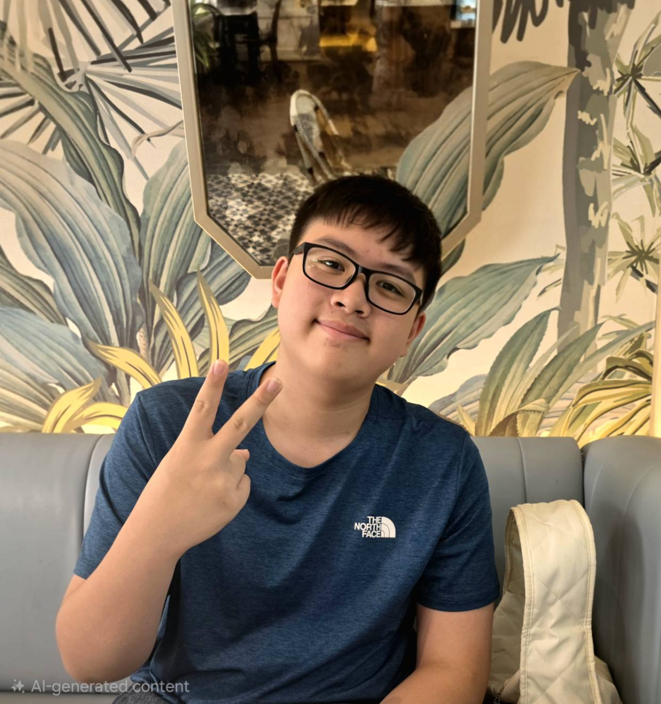

ชื่อ : เด็กชาย ณัฏฐพล ศรีสัตยากุล
ชื่อเล่น : ณัฏฐ์
วันเกิด : 06/02/2555
อายุ : 14 ปี

ระดับอนุบาล : โรงเรียน Tianprasit
ระดับประถมศึกษา : โรงเรียน Satitchula
ปัจจุบันกำลังศึกษา : โรงเรียน Suankularn wittayalai
งานอดิเรกของฉันคือ การเล่นเกม ฟังเพลง และเล่นกีฬา ฉันชอบเรียนวิชาคอมพิวเตอร์ เพราะสนุกและได้ฝึกทักษะการคิดวิเคราะห์ ความสามารถพิเศษของฉันคือ Competitive programming
ในอนาคตฉันอยากประกอบอาชีพ Software engineer เพราะฉันสนใจในด้านนี้และอยากพัฒนาตนเองให้เก่งขึ้นเรื่อย ๆ ฉันจะตั้งใจเรียนและฝึกฝนทักษะต่าง ๆ เพื่อให้ประสบความสำเร็จตามเป้าหมายที่ตั้งไว้